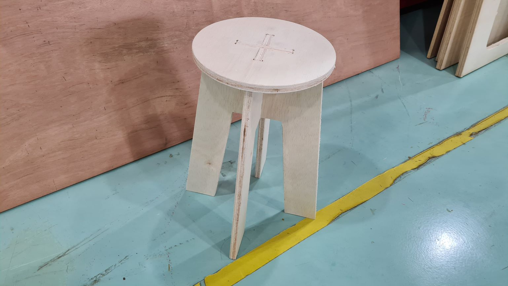

2D Computer Controlled Machining
2D CNC Machine:
For the computer controlled machining, we were introduced to the big 2D CNC Machine. Before starting anything, Mr Steven went through with us on the process and safety when using the machine. Things like not wearing anything loose and knowing where the emergency reset buttons are. We were also reminded to turn on the dust vacuum before doing any cuts. Lastly, we were shown a simple demo of cutting a simple design.
Assignment
We were tasked to design something big which was to be milled by the 2d cnc machine. I choose to design a flatpack stool since it was the most interesting out of the examples.Designing: To create the design, I used Fusion 360. I designed the bottom two legs first before the top platform. I have seen some examples with square platforms but I personally feel that a circle one would look much better.
I also made the slots for the legs to be just nice so that they would have a flush look. One more important thing was to add dogbones to the corners of the slots.
Once I finished the 2d sketches, I extruded them by 15mm. Lastly, I turned the parts into components before joining them together as you can see below.
CNC Machining:
Before cutting the wood, Mr Steven showed us how the process is like. So we firstly we transfered the generated gcode before positioning the design into the wooden template. DUring this process, it was best to place the design close to the sides of the wood so as to minimised wood waste. Unfortunately I didnt get to take any pictures of this process as it was important to listen to Mr Steven so as to not make any mistakes during our final project.
Now we can start the cutting process. We firstly positioned the suitable plywood on the cutting table before screwing the side firmly onto the sacrificial wood below.
Afterwards Mr Steven zeroed the X and Y axis respectively as shown here. Unfortunately I did not manage to take a picture during the calibration of the Z axis. It was basically the same process at the Stepcraft milling machine.
Next we started the cutting the wood. We had to wear the 3M earmuffs to protect our ears as the noise the cutting was making was loud.
Finally, once the cutting was done, I used the burr tool to get rid of the strands of leftover material from the cut before sanding the edges with the sander.
Here is the finished product after assembling it. It turned out pretty good in my opinion. Eventhough it did take some time to be put together due to my design tolerance being slightly off, it turned out pretty good in my opinion. However, one change that I would make next time is using a thicker plywood as the 15mm one that I used could be slightly stiffer. But not too bad for a simple design. 